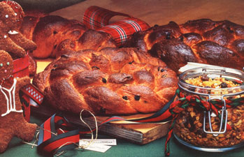

Last year our family decided to bake, rather than buy, gifts for our friends and relatives. And we discovered that simple ingredients, willing hands, basic kitchen equipment, and several hours' time are all it takes to make a satchel of gifts Santa would be proud to deliver. Furthermore, the gift-making process turned out to be more fun than shopping had ever been, and our presents were well received . . . in fact, you might say the folks who got them really ate them up!
I began our project by assembling three of our family's best-loved holiday recipes. Julekaqe is a rich, cardamom-flavored bread that's traditionally served on Christmas morning in Denmark, my husband's native country. The children's favorite was next: crisp gingerbread cookies. (I had redesigned the recipe to include only whole grains and unrefined sweeteners.) The third is a festive nutty and fruity granola that's as delicious for snacking as it is for breakfast. This trio of recipes yielded 20 generous and very tasty gifts, and filled the home pantry as well. The total cost of the ingredients, at current prices in our area, is less than $60. With simple and attractive packaging, then, your gifts could cost less than $4 apiece!
JULEKAGE
This recipe is huge (it'll make 10 loaves!), so you might prefer to halve it for easier handling.
1 cup of warm water
3 cups of warm milk
3 tablespoons of ground cardamom
2 large cans (13 ounces each) of evaporated milk, warmed
3 cups of currants
1/4 cup of honey
6 tablespoons of active dry yeast
6 cups of whole wheat bread flour
1 teaspoons of salt
1 cup of melted margarine or butter
2 cups of honey
6 beaten eggs
12 cups of whole wheat bread flour (more or less)
In a very large bowl-of at least 2-gallon capacity-combine the water, milk, cardamom, evaporated milk, currants, and 1/4 cup of honey. Sprinkle yeast over the surface and allow it to activate for 10 minutes or until bubbly. Then beat in 6 cups of whole wheat flour, giving it 300 vigorous strokes. Set the bowl in a warm place to let the mixture rise for 15-30 minutes, then whip in the salt, margarine or butter, 2 cups of honey, and the beaten eggs. Stir in more flour by the cupful until the dough is too stif to beat any more, then turn it out onto a floured board and knead for 15-20 minutes, or until the dough's smooth and no longer sticky. Lightly oil the surface of the bread-to-be; and place it in a large, clean, oiled bowl-covered with a clean, damp towel-to rise until it has doubled . . . usually about 90 minutes. Punch it down (that is, sock it energetically about 25 times) and let it rise again until doubled (about 45 minutes, this time).
To make loaves, first divide the dough into ten equal pieces. Lay all but one aside, covering them with a damp towel. Then divide the remaining loaf into three equal pieces, roll each piece into a thin strip, and braid the three together. Do the same with each of the remaining nine lumps of dough. Now, place the shaped loaves on greased cookie sheets or in bread pans. Brush the surface of the loaves with the gently beaten whites of 2 eggs.
[EDITORS NOTE: Brushing with milk will also produce a lovely glazed crust] Allow the loaves to rise for about 20 minutes, or until they're about 2/3 doubled, then bake them for 35-50 minutes at 350°F. (Baking time will depend on the shape of the loaves: Braids are done in 35 minutes, but loaf shapes take longer.) Unless you have a perfect oven, you'll need to rotate the breads from the oven's top to bottom shelves alter 20 minutes or so in order to have them brown evenly. When finished, the breads will sound hollow when tapped on the bottom. Lay them on racks or prop them up against bread pans to cool. Wrap them only when they are absolutely cool.
NUTTY AND FRUITY GRANOLA
This recipe makes something over two gallons of granola (I separate it into about 10 gift bags), so be sure you have a huge pot or bowl for mixing the following ingredients:
1 8 cups of rolled oats
4 cups of sunflower seeds
2 cups each of pumpkin seeds and raw, unsalted peanuts
1 cup each of chopped cashews, almonds, walnuts, and filberts
1 cup each of wheat germ and wheat bran
1 cups of shredded, unsweetened coconut
3 cups of honey
1 cup of safflower or corn oil
1 cup of melted butter or margarine
1 tablespoon of vanilla
2 cups each of raisins and chopped, pitted dates
Mix together all the dry ingredients except the dates and raisins, then heat the honey, oil, butter, and vanilla until they're well warmed and blended. With that done, pour the honey mixture over the dry ingredients and mix thoroughly. Now spread the granola evenly over cookie sheets or into roasting pans. (EDITOR'S NOTE: When testing this recipe, MOTHER's baker used eight cookie sheets.] The thinner the granola is spread, the quicker it will cook . . . which means it needs to be watched carefully lest it burn. Stir the mix frequently-every 3 minutes-while it bakes for about 20-30 minutes in a 300°F oven. Rotate the pans from the upper to the lower shelves to ensure even browning.
Remove the browned granola to a large bowl or bin for cooling (it becomes crisp when completely cool). Finally, mix in the raisins and dates, then package the cereal in snaplock bags . . . leaving some for Christmas munching!
GINGERBREAD GOODIES
Depending upon which cookie cutter I use, I can get 3-1/2 dozen large "people" or 10 dozen smaller cookies from this particular recipe.
5-3/4-6 cups of whole wheat pastry flour
1 /3 teaspoon each of cinnamon and cloves
1-1/4 teaspoons of ginger
2 teaspoons of baking soda
1 cup of butter or margarine
1 cup of honey
1/2 cup of molasses (for stronger flavor and additional nutrition, use blackstrap molasses)
1 tablespoon of vinegar
1 large egg, beaten
chopped nuts, candies, or currants
Sift together the dry ingredients. Then, in a saucepan, melt the butter and add the honey, molasses, and vinegar, heating until bubbly. Cool the honey mixture and add it, together with the beaten egg, to the dry ingredients. Beat this batter well and chill it for at least 2 hours (the mixture will be sticky). When the dough is thoroughly chilled, divide it into roughly 8 sections. To make thin, crisp cookies, roll one section at a time to about 1/16". If you'd prefer chewy cookies, roll the sections to about 1/16". Cut shapes with the cookie cutters-or freehand, if you prefer, using a sharp knife. Decorate your creations with chopped nuts, candies, or currants, and place them-nearly touching-on ungreased cookie sheets. Bake for 10-15 minutes at 350°F, watching carefully to see that they don't burn. Finally, remove the finished cookies to cooling racks, and package them in tins when they're thoroughly cool.
* * *
This year we're again looking forward to our baking session with enthusiasm. There's a special quality to home-cooked gifts, still fragrant from the oven and decorated with real ribbons. And mixed with the ingredients in these gifts is something of the earth-from whose bounty came the grains-and something of our own love and labor . . . all blended into an offering to nourish both the body arid the spirit.
|
|
 |
|